Parrucchieri · Truccatori · Piazza Frattini 15, Milano
Ascoltiamo i capelli.
Angelini Rossetti
Da oltre vent'anni, in Piazza Frattini, Mino e Giuliano tagliano, colorano e truccano con la musica accesa. Qui la musica non è un sottofondo: la playlist la scegliete voi.
4,6 su 132 recensioni Google
A1Velvet Blonde
A · Il colore
B · Taglio e trucco
C · La linea
D · La linea
A1 Velvet Blonde
«Le Originali. Firmate Angelini Rossetti.» Il nostro biondo luminoso, costruito un passo alla volta rispettando il capello.
Leggi la selezioneToccate una striscia, oppure una lettera e un numero.
Il posto
Non volevamo creare solo un salone.
Volevamo creare un posto che le persone avessero voglia di vivere.
Da oltre vent'anni apriamo questa porta con la stessa idea: far sentire ogni persona come se fosse a casa.
La musica non è un sottofondo, è parte dell'esperienza. Scegliete voi la playlist che accompagnerà il vostro momento; fermatevi per un caffè, una birra o due chiacchiere.
Ogni oggetto vintage racconta una storia: le poltrone da barbiere, la chitarra, gli specchi dorati. Le cose più belle sono quelle che continuano a vivere nel tempo.
A Milano c'è una finestra con la nostra insegna: è da lì che è cominciato tutto.
«I capelli sono ciò che facciamo. Le emozioni sono ciò che vogliamo lasciarvi.»
Il colore
Esperti in biondi e colorazioni su misura
- A1
Velvet Blonde
«Le Originali. Firmate Angelini Rossetti.» Il nostro biondo luminoso, costruito un passo alla volta rispettando il capello.
- A2
Microvele
Fili di luce sottilissimi, anche queste «le originali»: illuminano il viso senza stacchi. Microvele uguale armonia.
- A3
Velvet Brown
Il castano che accende il viso, spesso insieme a un Velvet Cut: morbidezza, luce e naturalezza in ogni dettaglio.
- A4
Double Color
Due colori sulla stessa testa, pensati insieme al taglio.
- A5
Colori su misura
Il colore pieno e deciso: fucsia, viola, rosso fuoco. Lo pensiamo per chi lo porta, e lo teniamo vivo con le maschere della nostra linea.
- A6
Ice Blonde
Il biondo freddo, platino, metallico. Anche partendo da un castano: prima valutiamo insieme se si può fare, poi si procede un passo alla volta.
«Il biondo non sarebbe biondo senza di loro.»
Volete sapere se un biondo si può fare anche sui vostri capelli? Scriveteci «BLONDE» su Instagram: @angelini_rossetti_
Taglio, cura e trucco
Parrucchieri e truccatori, donna e uomo
- B1
Velvet Cut
Il nostro taglio: accompagna il viso e il colore, con il movimento al posto giusto.
- B2
Uomo
Taglio e barba, sulle poltrone da barbiere della sala rossa.
- B3
Ricostruzione molecolare
Lavora in profondità sulla fibra e restituisce ai capelli un aspetto più sano, corposo e luminoso. In salone, con la nostra linea Hard Music.
- B4
Piega
Onde morbide, liscio, ricci definiti: la piega giusta per il vostro capello.
- B5
Trucco
Siamo parrucchieri e truccatori: trucco per una serata o un evento, insieme a colore e piega.
- B6
Set e shooting
Lavoriamo anche sui set: capelli e trucco per servizi fotografici e video.
La linea
Anche i nostri prodotti parlano di noi: portano il nome di canzoni che hanno accompagnato il nostro percorso.
- C1
Hard Music
Ricostruzione alla cheratina: shampoo, maschera e lozione, per continuare a casa.
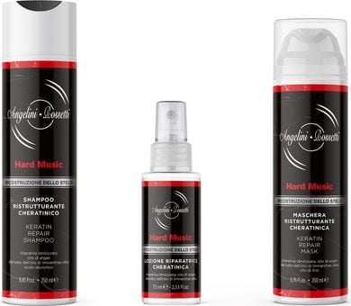
- C2
Soft Music
Per capelli deboli o fragili che tendono a cadere: shampoo energizzante e lozione con oli essenziali.
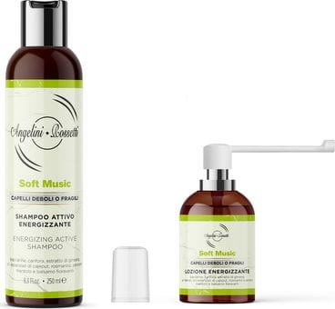
- C3
Slash Curl
Per i ricci: shampoo e maschera anticrespo, fluido ricci perfetti.
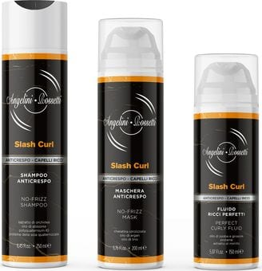
- C4
Bowie Color
Maschere colorate per ravvivare il colore fra un appuntamento e l'altro: viola, rosso, rame, cioccolato, oro, neutra. E la protezione colore.
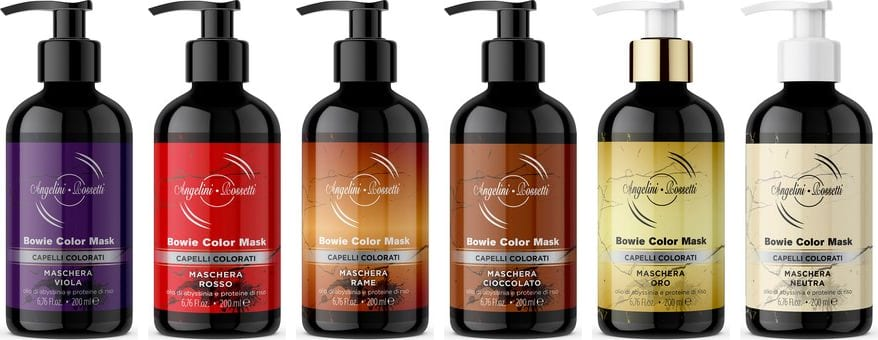
- C5
Rebel Yellow
Shampoo e maschera antigiallo per biondi, grigi e bianchi: tolgono i riflessi gialli.
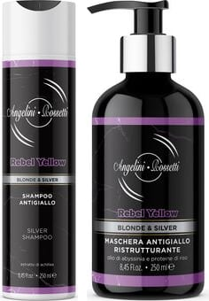
- C6
Beat Smooth
Fluido e maschera per capelli lisci o stirati, contro il crespo.
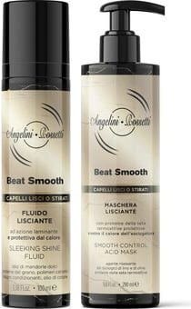
- D1
Natural Sound
La linea bio: shampoo, balsamo e spray volume, con olio d'oliva e olio di cartamo biologici.
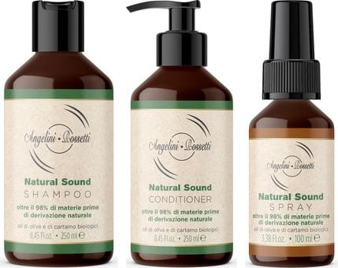
- D2
Chill Out Music
Per la cute stressata: trattamento all'argilla, shampoo purificante e siero termale.
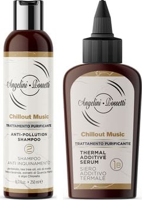
- D3
Summer Rock
Sole e mare: shampoo doccia, crema ristrutturante e spray bifasico con filtro UV.
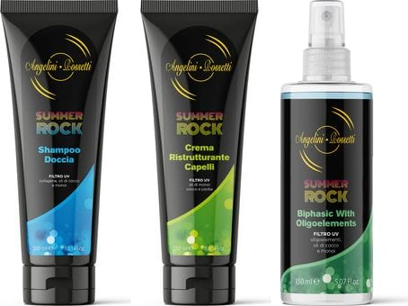
- D4
Vinyl Stone
Per lo styling: lacca e pasta modellante.
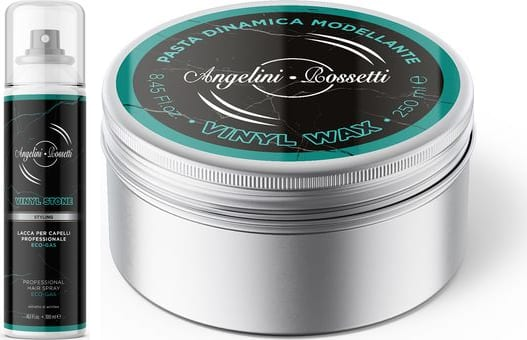
- D5
Vinyl Wave
Acqua di mare testurizzante: onde e volume, come dopo una giornata in spiaggia.
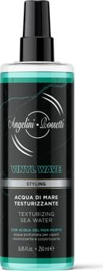
- D6
Dynamic Groove
Per chi fa sport e si lava spesso: shampoo doccia e crema ristrutturante.
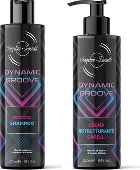
Chiedeteci in salone quale fa per voi.
4,6 su 132 recensioni Google
Dicono di noi
Veramente eccezionali! Soprattutto sui capelli ricci! Da molti anni ormai mi reco da Mino e Giuliano per la cura dei miei capelli e non solo sono preparati e aggiornati su colore, sfumature e piega (niente pettinature rigide o antiquate) ma sono davvero bravi anche con il taglio, soprattutto sul mio capello riccio/mosso che ha sempre un taglio impeccabile fino al prossimo appuntamento dal parrucchiere. Assolutamente consigliati!!!
Sono cliente da oltre 15 anni e questo dice già tutto. Ho sempre trovato grande professionalità, competenza e attenzione verso il cliente. Ogni volta esco dal salone soddisfatta: capiscono perfettamente ciò che desidero e il risultato è sempre impeccabile.
Oltre alla bravura, li rende speciali la simpatia, la cortesia, la disponibilità e l’atmosfera accogliente che ti fa sentire a casa.
Grazie Giuliano, non mi conoscevi e mi hai capito al volo. Ti ho dato solo un'indicazione di colore e in un paio d'ore mi hai rivoluzionato. Bravissimo, affidatevi a lui e non vi deluderà
Sono i numeri uno per il biondo freddo. Dopo 2 minuti hanno capito esattamente quello che volevo! Di una gentilezza e professionalità incredibili! Best in town!
Locale unico staff impareggiabile. Mino e Giuliano sanno "giocare" con i colori come pittori sulle tele 😊 prodotti di altissimo livello e tagli uomo/donna sempre con un tocco di "non so che" che li rende unici. E non tralasciamo la musica di fondo che ha sempre il suo perché 😜
Recensioni pubbliche su Google, copiate parola per parola.
Orari e dove
Piazza Pietro Frattini 15
| Lunedì | chiuso |
|---|---|
| Martedì | 9:00–19:00 |
| Mercoledì | 9:00–19:00 |
| Giovedì | 9:00–19:00 |
| Venerdì | 9:00–19:00 |
| Sabato | 9:00–19:00 |
| Domenica | chiuso |
Sulla piazza della fermata Frattini della M4. La nostra insegna è sulla finestra.
Vi consigliamo di prenotare: chiamateci o scriveteci in direct su Instagram.
- Telefono
- 02 4895 1774
- @angelini_rossetti_ (prenotazioni in direct)
- TikTok
- @angelinirossetti
- Angelini Rossetti
- Pagamenti
- Carte di credito e di debito, contactless
La mappa è di Google: aprendola, Google riceve il tuo indirizzo IP e può usare i suoi cookie.